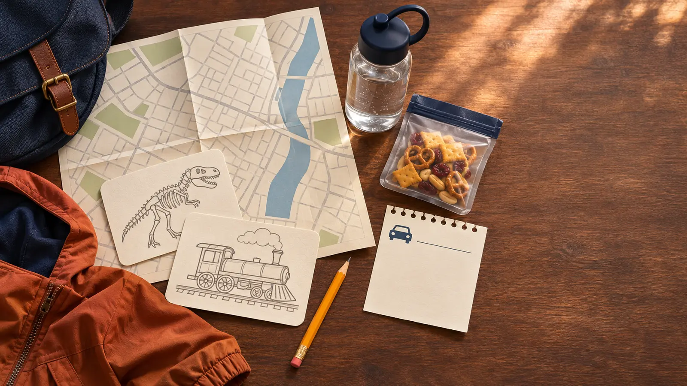

Stop 1 · 35 minutes
Choose one big visual anchor from the current list, such as the Cohoes Mastodon, Adirondack Wilderness or Minerals of New York. Give each child one job: find an object, read one label and ask one question.
ALBANY · INDOOR DAY TRIP · AUTHORITY-EXPANSION
The building is big enough to turn a free museum day into a six-hour endurance test. Pick three galleries, put food on the clock, and let the carousel be a bonus—not the promise holding the whole trip together.

From Syracuse, budget roughly two hours and fifteen minutes each way before traffic, weather and your actual starting point. Verify the route in current navigation. This is a full day because of the drive, not because your family needs to see the whole museum. Arrive with three targets: one New York natural-history stop, one people-and-place gallery, and one child-chosen wildcard. Eat before the fourth target.
As of the November 5, 2026 review, the museum lists Tuesday through Sunday hours of 9:30 a.m.–5 p.m. and closure on state-observed holidays. Admission is free, with a suggested donation of $5 per person or $10 per family. Those details can change. A free door does not mean a free day once parking, food, fuel and an optional shop stop enter the plan.
The museum address is 222 Madison Avenue in Albany. The current visit page says visitors should use the Madison Avenue entrance while the concourse entrance is closed. Follow on-site signs rather than a saved screenshot. The current bag limit is 16 by 12 by 6 inches—roughly a medium backpack or diaper bag—and complimentary lockers are available. Medical bags use the museum’s approval process. Measure the day bag at home; do not argue with a front-desk rule after a two-hour drive.
Pack small: water for outside the galleries, one allowed snack for the permitted eating stop, required medicine, a thin layer, a pencil, and one folded activity card. Leave bulky wagons and the just-in-case basement at home. If a stroller decides the day, the museum says strollers, wheelchairs and walkers are available at no cost through the Main Lobby desk, but availability is not guaranteed. Bring the device your family must have or call ahead.
The museum lists the Madison Avenue Lot west of the building, but its page and the state parking operator currently disagree on the weekday free-parking cutoff. The museum says after 2 p.m.; the Empire State Plaza parking page says the Madison Avenue Lot is a $10 weekday flat fee and free after 4 p.m. Use the stricter 4 p.m. assumption, budget the $10, then let posted signs and the current state parking page control. Both sources list free weekend parking, but event fees, construction, operations and towing rules can change it. The museum also points to the Visitor Lot/P-3 beneath the Empire State Plaza Concourse and limited metered street parking. Read every sign, use the current Empire State Plaza parking information, and do not assume an older rate or entrance.
Ordinary family visits do not require a ticket on the current visit page. Organized groups have separate registration rules. Build the budget before leaving: fuel, current parking, optional donation, meal, and one fixed shop ceiling. A useful no-surprise version brings lunch only if the museum confirms where it may be eaten; gallery floors are not picnic space.
The museum’s carousel page currently posts Tuesday–Sunday operating hours of 11 a.m.–4 p.m. and says at least ten riders are required to operate the historic working artifact. A separate museum page has carried a maintenance-closure notice. That conflict is exactly why the carousel cannot be the family promise. Check the current carousel page, then ask the lobby desk on arrival. If it is closed, lightly attended or the child does not meet a current operator instruction, move on without negotiating with the machine.
If it runs, let staff rules control seating, rider distribution and accompanying adults. Free admission does not turn a century-old working artifact into an on-demand ride. Children who cannot wait safely or handle a possible no-run outcome need a different reward plan.
For the long drive, use the motion-sickness plan and a fixed departure time. Do not add another Albany attraction because everyone looked good at noon.
Lake-effect or Thruway weather: this is not an indoor trip if the roads are the dangerous part. Use the family weather cutoff before loading the car and check official New York traffic and weather sources. Parking is full or entrance conditions changed: do not circle until the family is depleted; use the current official alternate lot or leave.
Low energy: Mastodon, one selected gallery, restroom, home. Carousel closed: sketch the favorite object and spend ten minutes in the shop only if the budget allows. Child is done after one room: eat, decide once, and leave. Unexpected closure: switch to the current MOST two-zone plan on a different day; do not invent an Albany substitute from the parking lot.
Skip this day when the round trip is too long for the family’s car tolerance, road weather is questionable, a must-see gallery or the carousel is the only acceptable outcome, the bag or food policy cannot fit a medical need without advance confirmation, or the parking-to-door route is unverified for mobility needs. Families who need a shorter drive and predictable finish may get more from the Erie Canal Museum plan or the Syracuse University Art Museum plan.
Reviewed November 5, 2026 using the New York State Museum’s official visit page, ongoing exhibition list, carousel page, renovation page and the Empire State Plaza’s visitor parking source. The three-gallery route, timing, exit rule and Syracuse drive estimate are independent planning judgments—not live operating information, an access certification or a museum itinerary. No affiliate or booking links are attached.
MAKE THE WEEK COUNT
Build the plan your family can finish well, then leave enough energy for the next part of the day.
More family plans